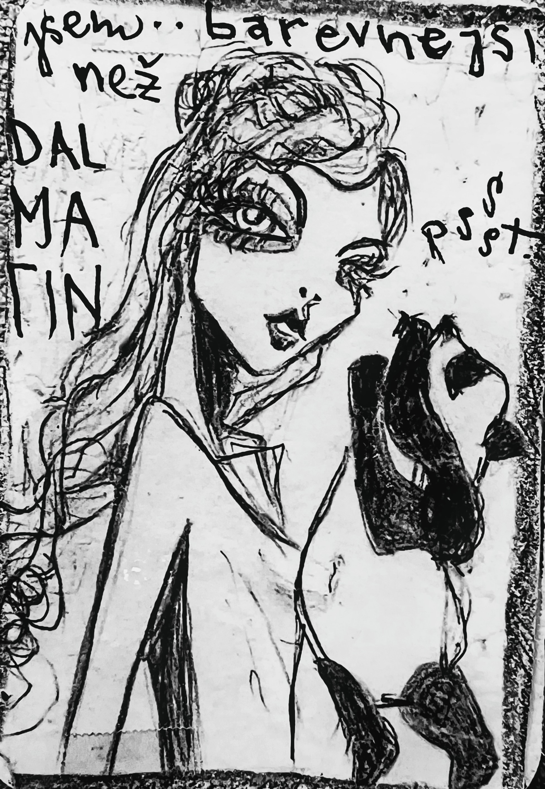
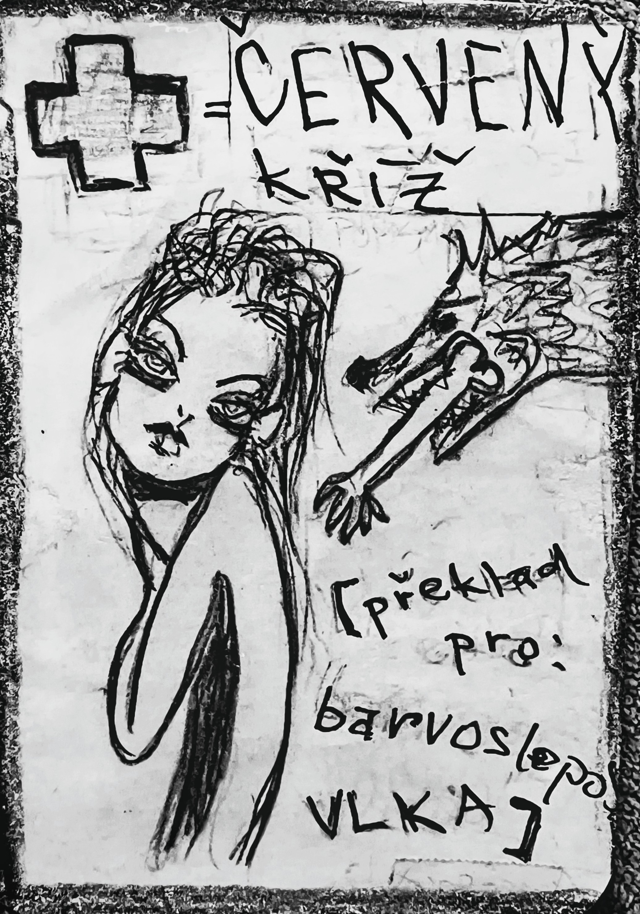

Myš si všímá věcí, které ostatní přehlížejí. Zapíše je do mezer mezi slovy, mezi obrazem a textem, mezi tím, co je řečeno, a tím, co je vynecháno. Tento deník je nástroj, který ti pomůže stát se takovou myší – dívat se na svůj vlastní jazyk a objevovat v něm skryté světy.
Každý fenomén (karta) můžeš vidět z různých úhlů. V deníku si můžeš pro každou kartu vybrat úhel – otočný půlkruhový úhloměr – a ukáže se ti krátká inspirační věta. Úhloměry jsou zpočátku nastaveny náhodně, můžeš si je před psaním projít a zkoušet. Po napsání textu ho analyzuj a systém určí, které úhly v tvém textu převažují. Úhloměry se pak automaticky nastaví podle této analýzy – uvidíš rozdíl mezi svým záměrem a výsledkem. Potom můžeš úhloměry dále otáčet ručně a zkoušet jiné perspektivy.
Analýzu provádí Myš pouze z jazykové struktury – nevšímá si významu, jen tvaru, rytmu, opakování, vět, čárek a mezer. To, co ostatní přehlížejí, Myš zapisuje do mezer mezi slovy.
Jazyk bez myšlení používat jde, ale myšlení bez jazyka těžko. Mytodeník ti pomůže rozšiřovat myšlení skrze jazyk – skrze 12 úhlů pohledu, které ukazují, že na jednu věc se dá podívat z mnoha stran.
Základní verze obsahuje 8 karet. Doplňkové balíčky (po 10 kartách) si můžeš zakoupit na Gumroad. Každý balíček přidá nové fenomény, ilustrace a jevy.






O MYŠI a o tom, co se stane, když si jí NEvšimneš
Kdysi – zároveň ne tak docela dávno. A ne úplně blízko, ale zase ani ne nijak moc daleko. Žila jedna myš. Byla malá, tak jak to u myší normálně bývá. A měla dvě veliké uši, což také není u myši žádná vzácnost.
Nebyla nijak zvlášť rychlá, ale ani úplně pomalá. Nebyla hloupá, ale ani kdovíjak chytrá. Na první pohled obyčejná, běžná myš. Ale ne – normální. Všímala si věcí, které ostatní přehlíželi.
Například toho, že se ve vzduchu občas zadrhne věta. Nebo že páv, když se nikdo nedívá, přepočítává svá oka. Nebo že čáp někdy jen tak přistane na komíně a zapomene, koho měl donést.
A tahle myš si začala věci zapisovat. Ne na papír. Ale tak nějak. Do ticha. Do koutů. Do skulin mezi slovama, kde to obvykle nikdo nečte.
A pak si jednoho dne všimla, že se kolem ní začínají hromadit zvířata. Ne v řadě. Ne v kruhu. Prostě… tak nějak. A každé si neslo něco, co nevysvětlovalo. Zajíc měl popálené uši a voněl po kouři. Kocour se dusil smíchem, protože spolkl tečku. Slon si v chobotu nesl třešně, co nikdy nedozrají. A lemur se nedíval na nic, jen na stranu, kde nic nebylo.
Myš neříkala nic. Ale všechno si poznamenala. A pak se jednoho dne zeptala první větu. Ne velkou. Ne důležitou. Jenom tu jednu: „Chceš myš?“
A to nebyla otázka, co se ptá na ni samotnou. To byla otázka, co se ptá na všechno. Na smysl. Na jazyk. Na strach. Na to, co si z nás kdo udělá. A taky na to, jestli si tuhle pohádku necháš vyprávět do konce. Nebo zapištíš a utečeš. Nebo si ji složíš jinak.
Protože od té chvíle už to nebyla jen myš. Byl to klíč. A pádlo. A past. A konec úvodu. Ale začátek něčeho dalšího.
Celý systém „Chceš myš?“ – slovník mezer – je postaven na principu mapování toho, co ostatní přehlížejí. Více se dozvíš v RepoDomu:
➜ Otevřít RepoDům